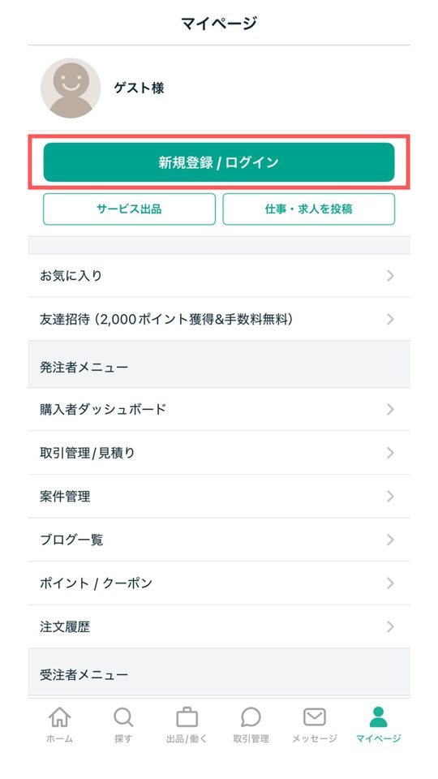
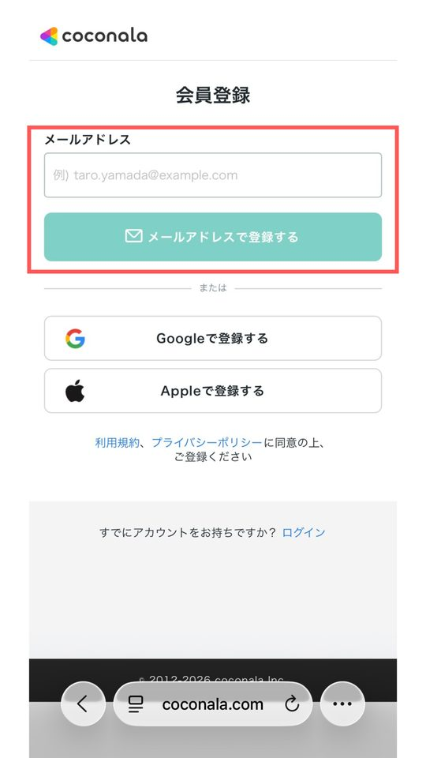
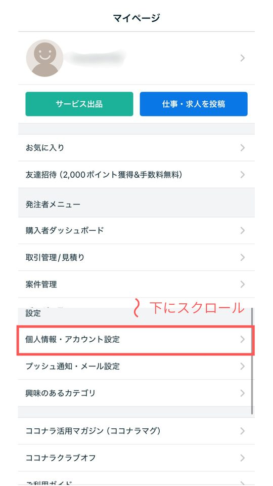
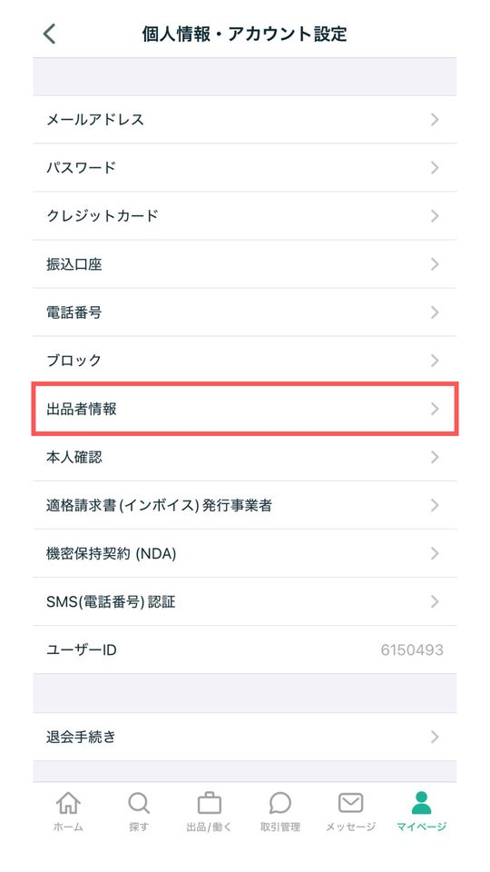
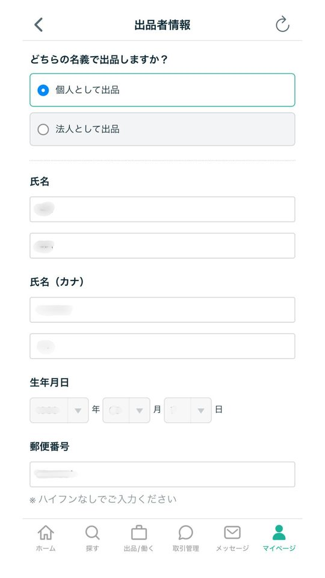
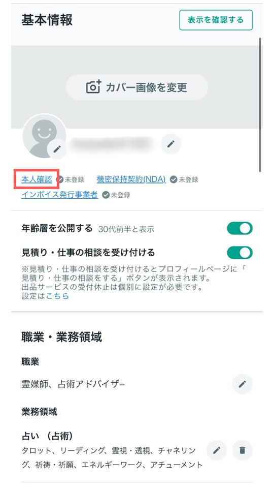
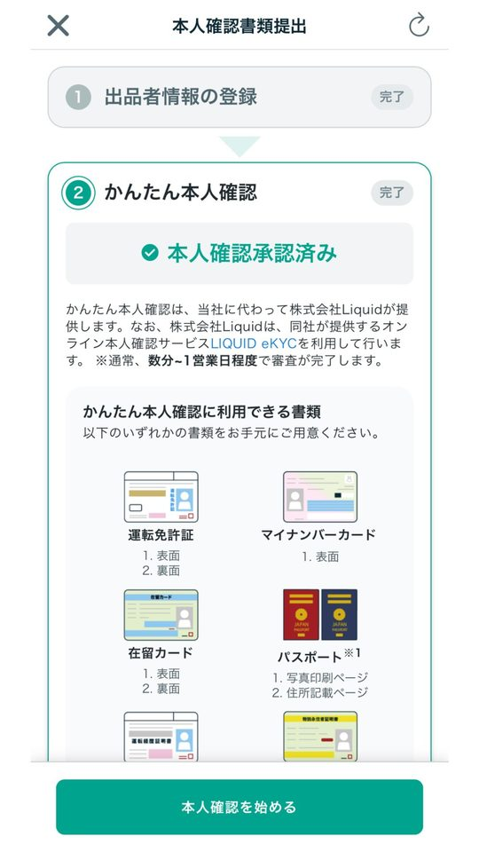
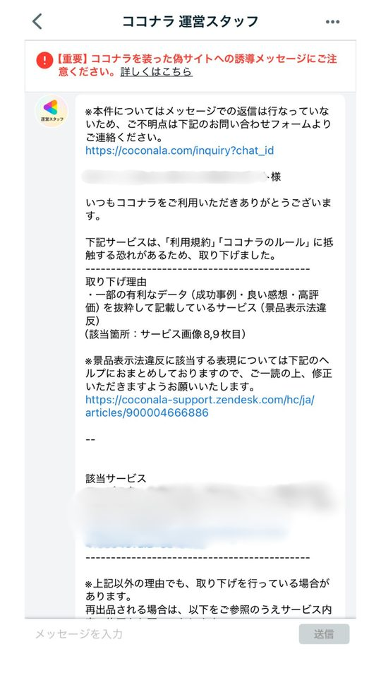

会員登録・出品者情報・本人確認を終わらせ、審査で落ちやすい表現を知る。
「登録に審査があるらしい」と思って手が止まる人がたくさんいます。実際は、会員登録と出品者情報の登録に審査はありません。チェックされるのは出品するサービスの中身だけです。落ちやすい表現を先に知っておけば、差し戻しで心が折れずに済みます。
登録の流れ
- 会員登録審査なし
- 出品者情報の登録審査なし
- 本人確認任意だけど、やっておく
- 出品の審査ここだけがチェックされる
会員登録と出品者情報の登録
会員登録も、出品者情報（氏名・住所・生年月日）の登録も、入力するだけですぐ終わります。
下の画面はスマホアプリのものです。ブラウザでも登録できますが、通知や本人確認がスムーズなので、App Store・Google Playで「ココナラ」アプリを入れておくと便利です。






画像を押すと大きく表示されます。横にスクロールできます。
本人確認
本人確認は審査ではなく、身分証を確認してもらう手続きです。任意ですが、プロフィールに「本人確認済み」と表示されて信頼が大きく上がります。ゴールドランク以上の条件にもなっているので、最初に済ませておきましょう。電話相談を出品する場合は、電話番号の登録とあわせて必須です。



- 運転免許証・マイナンバーカードなど、日本で発行された身分証が使えます。
- 申請してから結果の案内まで、最大5営業日かかります。
出品の審査で落ちやすい表現
占いカテゴリには、落ちやすい表現が3つあります。この3つを覚えておけば、差し戻しはほとんど防げます。
結果を約束する言葉
必ず復縁できます
復縁への可能性を一緒に探ります
医療・法律の助言に見える言葉
病気が治ります
占術的な視点から、心の整理をお手伝いします
ココナラの外の連絡先
LINEで直接相談OK
書かない（やりとりはココナラの中だけ）

ひとまずの自己紹介文をAIで作る
審査に通りやすい、控えめで誠実な自己紹介文をChatGPTに作ってもらいます。（ ）の中を自分のことに書きかえてから送ってください。本格的なプロフィールはSTEP 3で作るので、ここではひとまずの文章で大丈夫です。
あなたはココナラの占いカテゴリの出品審査担当者の視点も理解しているライターです。 以下の情報から、出品審査に通りやすい「控えめで誠実な印象」の自己紹介文を120字程度で作成してください。 【条件】 ・断定的な表現（絶対、必ず、100%など）は使わない ・医療・法律行為を想起させる言葉は使わない ・連絡先や外部SNSへの言及は一切入れない 【入力情報】 ・扱う占術：（例：タロット、西洋占星術） ・得意な相談内容：（例：恋愛、仕事の悩み） ・対応可能な姿勢：（例：丁寧に、寄り添う形で）
AIも完璧ではありません。できた文章は必ず自分の目で確認してください。